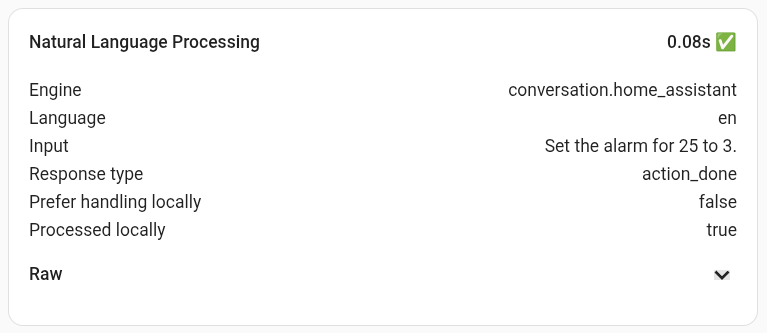

My voice assistant is slow
Benchmark speeds for voice assistant responses are hard to come by, even for Alexa and Google Assistant. Reviews tend to focus on accuracy and feature comparisons.
This is understandable because there are a number of steps between wake word and response, any one of which could increase latency:
- Wake word detection
- End of speech detection
- Speech to text
- Natural language processing
- Action
- Text to speech response
TTS in particular can introduce varying delays because typically the whole response has to be compiled before the voice assistant starts speaking.
The only measure that Home Assistant provides is the Natural Language Processing figure in Assist debug (Settings | Voice assistants, then use the "three dots" overflow menu next to your voice assistant name).

This represents the time taken by Assist to process the text provided by STT and interpret its meaning. It doesn't include the time taken by STT itself or by any TTS response. It is not available programmatically, so you can't use it to provide statistics.
If you feel your voice assistant is repsonding slowly, currently your only option is to fine-tune individual steps in the pipeline. Some TTS services are faster than others, for example, so you could try out one like Elevenlabs that prioritises speed. You can even build your own private inference server, using a Nvidia GPU card to power natural language processing.
If you have an ESPHome device (including Voice PE) loading additional components such as Bluetooth may have a significant impact on performance.